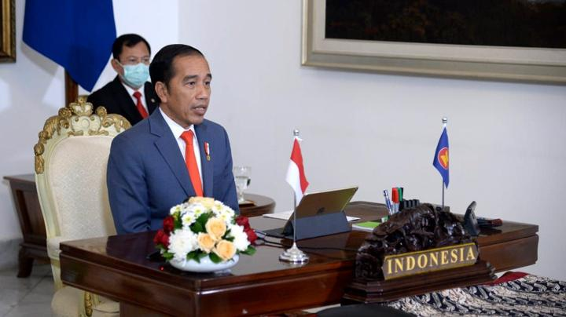
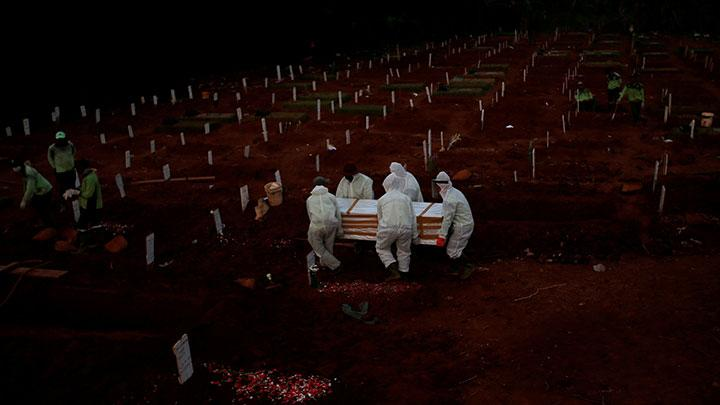

Wajah Otoriter Pemerintahan Jokowi

INILAH ironi pemerintahan Joko Widodo: hasil proses demokrasi kini justru menunjukkan sisi otoriternya.
Makin ironis karena gejala ini menguat di tengah penderitaan rakyat akibat pandemi Coronavirus Disease 2019 alias Covid-19.
Tindakan represif aparat akan mempersulit upaya membangun solidaritas masyarakat, yang sangat diperlukan untuk mengatasi dampak wabah.
Read More
Bencana Covid-19 dan Kejahatan Negara

DINI hari tanggal 17 Agustus 1999, gempa dengan kekuatan 7,4 skala Richter mengguncang wilayah Marmara, Turki.
Korban jiwa diperkirakan mencapai 35.000-50.000, lebih dari 300.000 bangunan hancur, 200.000 orang kehilangan tempat tinggal,
dan kerugian yang diderita mencapai $3,5 milyar. Pemerintah dan militer Turki banyak menuai kritik karena dinilai lamban dalam
melakukan penanganan bencana dan memberikan bantuan. Di samping tanggung jawab dalam penanganan (pasca) bencana,
seberapa jauh sebenarnya cakupan tanggung jawab negara terhadap kejadian bencana tersebut? Bagaimana dengan pandemi Covid-19
yang juga sudah dikategorikan sebagai bencana?
Read More